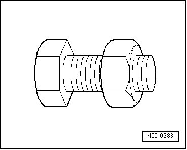

Residual Pressure Retaining Valve
Residual Pressure Retaining Valve
Residual pressure valve my only be replaced if:
• It was damaged during removal, installation or repair of air spring damper,
• Residual pressure retaining valve stuck,
• Gasket is faulty.
If residual pressure retaining valve sticks, the vehicle must be on a hoist and the wheels must rotate freely in order to replace the valve. Wheels must not be compressed with empty boot under any circumstances!
Gaskets and Seals
• Always replace gaskets and boot.
• After removing seals, check sealing surfaces on housings for burrs and damage.
Bolts and Nuts
• Loosen and tighten the bolts and nuts of covers and housings in a diagonal sequence.

• Tightening specifications for non-lubricated bolts and nuts are given.